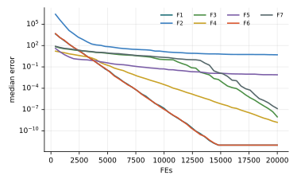

Chương 12 · Mục 12.2Chapter 12 · Section 12.2
Thuật toán tảo nhân tạoArtificial Algae AlgorithmArtificial Algae Algorithm — AAAAAA — colonies that grow, swim and adapt
Châu Văn Vân · PTITHCM
Mục tiêu bài họcLearning objectives
Sau chương này, bạn có thểAfter this chapter you will be able to
- Mô tả ba quá trình của AAA: chuyển động xoắn ốc, tiến hóa, thích nghi.Describe AAA's three processes: helical movement, evolution, adaptation.
- Giải thích vai trò của kích thước khuẩn lạc, năng lượng và bề mặt ma sát.Explain colony size, energy and friction surface.
- Viết công thức chuyển động xoắn ốc trên ba chiều ngẫu nhiên.Write the helical movement on three random dimensions.
- Đọc kết quả: AAA thuộc nhóm tốt nhất trong thực nghiệm của giáo trình.Read the results: AAA is among the best in the textbook's experiments.
Tổng quanOverview
Vi tảo: lớn lên, bơi xoắn và thích nghi với ánh sángMicroalgae: grow, swim helically and adapt to light
- Do Uymaz, Tezel và Yel đề xuất năm 2015 (Applied Soft Computing 31).Proposed by Uymaz, Tezel and Yel in 2015 (Applied Soft Computing 31).
- Vi tảo quang hợp sống thành khuẩn lạc; khuẩn lạc ở nơi đủ dinh dưỡng và ánh sáng thì lớn nhanh (mô hình Monod).Photosynthetic microalgae live in colonies; colonies with enough nutrients and light grow fast (Monod model).
- Tảo bơi theo đường xoắn ốc về phía nguồn sáng; khuẩn lạc càng lớn thì ma sát càng nhiều nên bơi càng chậm.Algae swim along a helix toward light; bigger colonies have more friction and swim slower.
- Khuẩn lạc “đói” sẽ thích nghi bằng cách tiến về khuẩn lạc lớn nhất.A “starving” colony adapts by moving toward the largest colony.
Ý tưởng cốt lõiCore idea
Mỗi khuẩn lạc là một lời giải. Khuẩn lạc tốt lớn lên, nhưng lớn thì bơi chậm; khuẩn lạc kém thì đói và phải thích nghi.Each colony is a solution. Good colonies grow, but big ones swim slowly; poor colonies starve and must adapt.
Các thành phầnComponents
Bốn đại lượng của một khuẩn lạcFour quantities per colony
- Vị tríPositionVị tríPosition
- Lời giải xi ∈ ℝDThe solution xi ∈ ℝD
- Kích thước GSize GKích thước GSize G
- Tăng theo độ thích nghi (Monod)Grows with fitness (Monod)
- Năng lượng EEnergy ENăng lượng EEnergy E
- Tỉ lệ với kích thước; quyết định số bước bơiProportional to size; sets the number of swims
- Độ đói AStarvation AĐộ đói AStarvation A
- Tăng khi khuẩn lạc không cải thiệnGrows when the colony fails to improve
Tăng trưởng MonodMonod growth
μ = μmax S / (Ks + S)Bề mặt ma sátFriction surface
τ(xi) = 2π (∛(3Gi/4π))²Các bướcSteps
Các bước của AAAAAA step by step
Mỗi vòng: tăng trưởng, bơi tới khi hết năng lượng, rồi tiến hóa và thích nghi.Each iteration: grow, swim until out of energy, then evolve and adapt.
- Khởi tạo khuẩn lạc; kích thước ban đầu bằng 1.Initialize colonies; initial size 1.
- Tính kích thước, năng lượng, ma sát từ độ thích nghi.Compute size, energy and friction from fitness.
- Mỗi khuẩn lạc chọn nguồn sáng (giải đấu) và bơi xoắn ốc khi còn năng lượng.Each colony picks a light source (tournament) and swims helically while it has energy.
- Tiến hóa: một ô của khuẩn lạc nhỏ nhất lấy từ khuẩn lạc lớn nhất.Evolution: one cell of the smallest colony is copied from the largest.
- Thích nghi với xác suất Ap: khuẩn lạc đói nhất tiến về khuẩn lạc lớn nhất.Adaptation with probability Ap: the most starved colony moves toward the largest.
2 – 5 vòng lặp chínhmain loop
Thuật toánAlgorithm
Lưu đồFlowchart
Mô hình toán họcMathematical model
Bơi xoắn ốc trên ba chiều m, k, l khác nhauA helical swim on three distinct dimensions m, k, l
- j: khuẩn lạc nguồn sáng chọn bằng giải đấu; Δ: lực cắt; τi: bề mặt ma sát.j: the light-source colony picked by tournament; Δ: shear force; τi: friction surface.
- p ~ U(−1, 1), α, β ~ U(0, 2π): ba chiều tạo thành một bước xoắn trong không gian.p ~ U(−1, 1), α, β ~ U(0, 2π): the three dimensions form one helical step.
- Mỗi bước bơi tốn e/2 năng lượng; nếu không cải thiện thì mất thêm e/2.Each swim costs e/2 energy; a failed swim costs another e/2.
Mô hình toán họcMathematical model
Khuẩn lạc nhỏ học từ khuẩn lạc lớnSmall colonies learn from big ones
- Tiến hóa chỉ đổi một chiều mỗi vòng, nên thay đổi rất nhẹ.Evolution changes only one dimension per iteration, a gentle change.
- Thích nghi kéo khuẩn lạc kém nhất về phía khuẩn lạc tốt nhất: một bước khai thác mạnh.Adaptation pulls the worst colony toward the best: a strong exploitation step.
- Cài đặt trong giáo trình chuẩn hóa G, E, τ về [0, 1]; các bản cài đặt công khai khác nhau ở bước chuẩn hóa này.The textbook's code normalizes G, E, τ to [0, 1]; public implementations differ in this step.
Tham sốParameters
Tham số của AAAAAA parameters
| Tham sốParameter | Ý nghĩaMeaning | Giá trị thường dùngTypical value |
|---|---|---|
| n | Số khuẩn lạcNumber of colonies | 40 (bài gốc) / 30 (giáo trình) |
| Δ | Lực cắtShear force | 2 |
| e | Mất năng lượngEnergy loss | 0.3 |
| Ap | Xác suất thích nghiAdaptation probability | 0.5 |
| Ks | Hằng số bán bão hòa Monod (lựa chọn cài đặt)Monod half-saturation constant (implementation choice) | 0.5 |
Số lần đánh giá mỗi vòng thay đổi theo năng lượng của từng khuẩn lạc, nên AAA phải được so sánh theo ngân sách đánh giá hàm.Evaluations per iteration depend on each colony's energy, so AAA must be compared by evaluation budget.
Mô phỏngSimulation
10 khuẩn lạc trên địa hình chung10 colonies on the shared landscape
Kích thước chấm tỉ lệ với kích thước khuẩn lạc G. Viền đỏ là khuẩn lạc đói nhất.Dot size scales with colony size G. The red outline marks the most starved colony.
Trên 2 chiều, ba chiều m, k, l được chọn có lặp lại.In 2-D the three dimensions m, k, l are drawn with repetition.
Ví dụ tính tayWorked example
Một bước bơi xoắn ốc trong 3 chiềuOne helical swim in 3-D
- Δ − τi = 1.6; cos α = 0.5, sin β = 1.Δ − τi = 1.6; cos α = 0.5, sin β = 1.
- Tăng trưởng Monod với độ thích nghi chuẩn hóa 0.8: 0.8 / (0.5 + 0.8) = 0.615.Monod growth with normalized fitness 0.8: 0.8 / (0.5 + 0.8) = 0.615.
Kết quảResult
- xi1 = 1 + (2 − 1)·1.6·0.5 = 1.8xi1 = 1 + (2 − 1)·1.6·0.5 = 1.8
- xi2 = 2 + (0 − 2)·1.6·0.5 = 0.4xi2 = 2 + (0 − 2)·1.6·0.5 = 0.4
- xi3 = 3 + (4 − 3)·1.6·1 = 4.6 → vị trí mới (1.8, 0.4, 4.6).xi3 = 3 + (4 − 3)·1.6·1 = 4.6 → new position (1.8, 0.4, 4.6).
Các biến thểVariants
Hướng cải tiếnDirections of improvement
AAA nhiều nguồn sángMulti-light-source AAA
Mỗi chiều chọn một nguồn sáng riêng bằng giải đấu (Uymaz, Tezel & Yel, 2015, Biosystems).Each dimension picks its own light source by tournament (Uymaz, Tezel & Yel, 2015, Biosystems).
AAA hỗn loạnChaotic AAA
Ánh xạ hỗn loạn cho p, α, β.Chaotic maps for p, α, β.
AAA nhị phânBinary AAA
Cho chọn đặc trưng và bài toán tổ hợp.For feature selection and combinatorial problems.
AAA đa mục tiêuMulti-objective AAA
Kho Pareto như chương 14.A Pareto archive as in chapter 14.
Ứng dụngApplications
Ứng dụng của AAAAAA applications
AAA được dùng cho các bài toán liên tục nhiều chiều trong kỹ thuật.AAA is used for high-dimensional continuous engineering problems.
Năng lượngEnergy
Điều độ kinh tế, ước lượng tham số pin quang điện.Economic dispatch, PV parameter estimation.
Thiết kếDesign
Bình áp lực, kết cấu.Pressure vessels, structures.
Quỹ đạo không gianSpace trajectories
Thiết kế quỹ đạo tàu vũ trụ (bản AAA hỗn loạn).Spacecraft trajectory design (chaotic AAA).
Học máyMachine learning
Chọn đặc trưng, huấn luyện mạng.Feature selection, network training.
Thực nghiệm · AAAExperiment · AAA
Kết quả trên bộ 7 hàm, D = 10, 30 lần chạyResults on the 7-function suite, D = 10, 30 runs
| HàmFunction | Trung bìnhMean | Độ lệchStd | Trung vịMedian | so PSOvs PSO |
|---|---|---|---|---|
| F1 · Sphere | 0 | 0 | 0 | ≈ |
| F2 · Rosenbrock | 4.77e+0 | 4.28e+0 | 5.06e+0 | ≈ |
| F3 · Rastrigin | 2.65e−1 | 4.48e−1 | 6.08e−9 | + |
| F4 · Ackley | 0 | 0 | 0 | + |
| F5 · Griewank | 9.00e−3 | 8.77e−3 | 7.82e−3 | + |
| F6 · Shifted Sphere | 0 | 0 | 0 | ≈ |
| F7 · Shifted Rastrigin | 3.99e−1 | 6.72e−1 | 1.38e−7 | + |
- Sai số f(xbest) − f* sau 20 000 lần đánh giá; n = 30; tham số mặc định của bài gốc; giá trị < 10−8 ghi là 0.Error f(xbest) − f* after 20,000 evaluations; n = 30; default parameters of the original paper; values < 10−8 shown as 0.
- Cột cuối: Wilcoxon rank-sum với PSO (α = 0.05): + tốt hơn, − kém hơn, ≈ không khác biệt.Last column: Wilcoxon rank-sum vs PSO (α = 0.05): + better, − worse, ≈ no difference.
- Xếp hạng Friedman trung bình: 5.21, đứng thứ 2/18 trong 18 thuật toán của giáo trình.Average Friedman rank: 5.21, position 2/18 among the textbook’s 18 algorithms.
- AAA giải được F6, F7 gần như bằng F1, F3: không thấy thiên lệch gốc tọa độ.AAA solves F6, F7 about as well as F1, F3: no origin bias observed.
Thực nghiệm · AAAExperiment · AAA
Đường hội tụ (trung vị 30 lần chạy)Convergence (median of 30 runs)

Mã nguồnSource code
Mã nguồn PythonPython source code
Đoạn trích phần cập nhật chính; tệp đầy đủ có chú thích và tham số mặc định theo bài gốc.Excerpt of the main update; the full file documents the default parameters of the original paper. code/si/algorithms/aaa.py
for i in range(n): starving = True while energy[i] > 0 and not prob.done: a, b = rng.integers(n, size=2) # tournament chọn nguồn sáng j = a if fx[a] < fx[b] else b if j == i: j = (i + 1) % n m, k, l = rng.choice(D, 3, replace=D < 3) y = X[i].copy() y[m] += (X[j, m] - X[i, m]) * (delta - tau[i]) * rng.uniform(-1, 1) y[k] += (X[j, k] - X[i, k]) * (delta - tau[i]) * np.cos(rng.uniform(0, 2 * np.pi)) y[l] += (X[j, l] - X[i, l]) * (delta - tau[i]) * np.sin(rng.uniform(0, 2 * np.pi)) y = prob.clip(y) fy = prob(y)[0] energy[i] -= e / 2 if fy < fx[i]: X[i], fx[i] = y, fy starving = False
Chạy lại toàn bộ thực nghiệm: python -m experiments.run_continuous trong thư mục code/ (xem PROTOCOL.md).Reproduce all experiments: python -m experiments.run_continuous inside code/ (see PROTOCOL.md).
Đánh giáAssessment
Mạnh nhưng nhiều chi tiết cài đặtStrong, but many implementation details
Điểm mạnhStrengths
- Thứ hạng Friedman 5.21, ngang MPA, chỉ sau ABC trong thực nghiệm của giáo trình.Friedman rank 5.21, tied with MPA, behind only ABC in the textbook's experiments.
- Bơi theo năng lượng: khuẩn lạc tốt được tìm kiếm nhiều hơn.Energy-driven swimming: good colonies are searched more.
- Ba cơ chế khác nhau cân bằng khám phá và khai thác.Three distinct mechanisms balance exploration and exploitation.
Hạn chế và biến thểLimitations and variants
- Mô tả trong bài gốc để ngỏ cách chuẩn hóa kích thước, năng lượng, ma sát; các bản cài đặt cho kết quả khác nhau.The original description leaves the normalization of size, energy and friction open; implementations differ.
- Số lần đánh giá mỗi vòng không cố định; phải so sánh theo ngân sách.Evaluations per iteration vary; compare by budget.
- Cần ít nhất 3 chiều cho bước xoắn ốc.The helical step needs at least 3 dimensions.
Bài tập và thực hànhExercises and labs
Luyện tập: tính tay rồi lập trìnhPractice: by hand, then in code
Bài tập lý thuyếtTheory exercises
- Tính τ cho G = 1, 8, 27 (chưa chuẩn hóa).Compute τ for G = 1, 8, 27 (unnormalized).
- Với e = 0.3 và năng lượng 1, khuẩn lạc bơi tối đa bao nhiêu bước?With e = 0.3 and energy 1, at most how many swims?
- Vì sao khuẩn lạc lớn lại bơi bước ngắn hơn?Why do big colonies take shorter steps?
Thực hành Python / MATLABPython / MATLAB labs
- Chạy AAA với Ap ∈ {0, 0.5, 1} trên Rastrigin.Run AAA with Ap ∈ {0, 0.5, 1} on Rastrigin.
- Thử bỏ chuẩn hóa năng lượng và quan sát số lần đánh giá mỗi vòng.Remove energy normalization and observe evaluations per iteration.
- Cài bản nhiều nguồn sáng và so sánh.Implement the multi-light-source version and compare.
Tài liệu tham khảoReferences
Đọc thêm: các bài báo gốcFurther reading: the original papers
- S. A. Uymaz, G. Tezel, and E. Yel, “Artificial algae algorithm (AAA) for nonlinear global optimization,” Applied Soft Computing, vol. 31, pp. 153–171, 2015, doi: 10.1016/j.asoc.2015.03.003.
- S. Mirjalili, A. H. Gandomi, S. Z. Mirjalili, S. Saremi, H. Faris, and S. M. Mirjalili, “Salp Swarm Algorithm: A bio-inspired optimizer for engineering design problems,” Advances in Engineering Software, vol. 114, pp. 163–191, 2017, doi: 10.1016/j.advengsoft.2017.07.002.
Tóm lạiIn short
Cảm ơn các bạn đã theo dõiThank you for your attention
Châu Văn Vân · PTITHCM · Tài liệu gốc: Uymaz, Tezel & Yel, Applied Soft Computing 31, 2015Original paper: Uymaz, Tezel & Yel, Applied Soft Computing 31, 2015